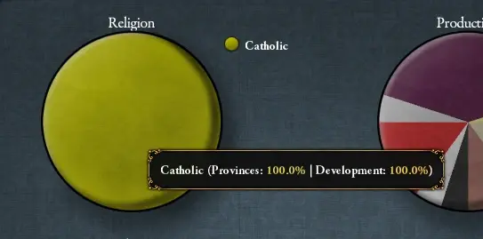

宗教（英文：Religion）是歐陸風雲4的重要組成部分，它既表現了國家對某種神明或思想的虔信，又涵蓋了人民對其他異端邪說的寬容。對外，同宗教的國家間關係將更為友善，更易於達成外交協定；異宗教的國家間關係則更為緊張，更易發生衝突。對內，信奉國教的省份更為安定，人民更為順從；信奉異宗教的省份則更為叛逆，更為動盪不安。玩家可以通過多種方法改變國家宗教，這會導致多種內政外交上的反轉；也可以用傳教士等改變某一省份的宗教，促使該地與國家達成宗教統一。
宗教與教派
注意：不同宗教的信息目前已分別錄入各個宗教組的頁面，統一的「宗教與教派」頁面不再使用。可以通過頁面頂部右側的導航欄直接查看各宗教和教派。
在遊戲中，世界上的各種宗教和教派被分為了若干個宗教組；每個宗教組中都有若干種教派。同一宗教組的不同教派之間彼此視為
關於各個宗教和教派的詳細機制和內容，可以通過頁面頂部右側的導航欄直接查看各宗教和教派。

自EU4首次問世以來，它的許多特色宗教都得到了進一步發展，並以獨特的機製得到充實。
在開啟一些DLC後很多宗教都有了新的機制，下表將列出對應關係。
| DLC | 獲得新機制的宗教 |
|---|---|
| |
| |
| |
| |
| |
| |
| |
| |
| |
| |
|
 宗教統一
宗教統一

 宗教統一是除貿易公司所屬省份之外，所有信奉正統信仰或正容忍的異端/異教省份的發展度佔總發展度的比值。
宗教統一是除貿易公司所屬省份之外，所有信奉正統信仰或正容忍的異端/異教省份的發展度佔總發展度的比值。
- 無論容忍有多少，信奉正統信仰的省份永遠提供100%的
 宗教統一。
宗教統一。 - 異端/異教造成的 宗教統一懲罰取決於其容忍度。
上述的貢獻比例如下表所示：
| 容忍 | 懲罰 |
|---|---|
| 負容忍 | -100% |
| 0容忍 | -75% |
| 1容忍 | -50% |
| 2容忍 | -25% |
| 3容忍 | 0% |
比如說，一個 天主教國家有一個10發展度的
天主教國家有一個10發展度的 天主教省份，一個4發展度的
天主教省份，一個4發展度的 新教省份和一個16發展度的
新教省份和一個16發展度的 遜尼派省份。此時如果該國的異端容忍為+1，異教容忍為-2，其宗教統一即為 1-(0%*10 + 50%*4 + 100%*16)/(10 + 4 + 16) = 40%。
遜尼派省份。此時如果該國的異端容忍為+1，異教容忍為-2，其宗教統一即為 1-(0%*10 + 50%*4 + 100%*16)/(10 + 4 + 16) = 40%。
下表為增加宗教統一的理念和政策：
| 傳統 | 理念 | 獎勵/野心 | 政策 | |
|---|---|---|---|---|
| +50% | — |
|
— | — |
| +33% |
|
— | — | — |
| +30% |
|
— | — | — |
| +25% |
|
|
— | — |
| +20% |
|
|
— |
|
| +15% | — |
|
— | — |
| +10% | — |
|
— | — |
宗教統一直接帶來以下效果：
- 每1%的宗教統一：[1]
| +0.01 | 月度狂熱 | |
| +0.05 | 專制度上限 | |
| +0.05 | 教士忠誠度平衡 | |
| +0.05 | 婆羅門忠誠度平衡 |
- 每1%低於100%的宗教統一：[2]
| +1.0% | 穩定花費修正 | |
| +0.03 | 全國叛亂 | |
| −1.0% | 教會力量 | |
| −0.01 | 年度奉獻度 | |
| +0.001 | 年度腐敗度 |
容忍
每一個國家都有三項容忍值——  正統信仰容忍、
正統信仰容忍、 異端容忍和
異端容忍和 異教容忍。這三項容忍在全國都是一致的，每一個省份都會根據其本地的宗教與國家正統信仰的關係決定其適用哪一種容忍。
異教容忍。這三項容忍在全國都是一致的，每一個省份都會根據其本地的宗教與國家正統信仰的關係決定其適用哪一種容忍。
每點正容忍給予：[3]
| −1 | 本地叛亂 |
每點負容忍給予：[4]
| +1.25 | 本地叛亂 | |
| −10% | 本地稅收修正 | |
| −10% | 本地貿易貨物生產修正 |
此外，異端和異教的正容忍會減輕國內異端、異教省份給國家帶來的  宗教統一懲罰。
宗教統一懲罰。
請注意，部分國家理念和通用理念可以  免除所有負宗教容忍帶來的懲罰。
免除所有負宗教容忍帶來的懲罰。
| 傳統 | 理念 | 獎勵/野心 | 政策 | |
|---|---|---|---|---|
| yes |
|
|
— | — |
正統信仰容忍
顧名思義，正統信仰容忍與你國家的  正統信仰有關。比如一個
正統信仰有關。比如一個  天主教國家的
天主教國家的  天主教省份就應用此值。此值的基礎值為+3，且不設上限。
天主教省份就應用此值。此值的基礎值為+3，且不設上限。
| 傳統 | 理念 | 獎勵/野心 | 政策 | |
|---|---|---|---|---|
| +3 |
|
— | — | — |
| +2 |
|
|
|
— |
| +1 |
|
|
— | — |
一些宗教對信仰該宗教的國家帶來正統信仰容忍的加成：
- +3
 儒教達到100%和諧度
儒教達到100%和諧度 - +2 信仰
 猶太教或
猶太教或 祆教
祆教 - +2
 拜物教國家崇拜物選擇「姆利拉」
拜物教國家崇拜物選擇「姆利拉」 - +2 是
 騰格里信仰並且兼容
騰格里信仰並且兼容  泛靈論、拜物教或
泛靈論、拜物教或  圖騰崇拜
圖騰崇拜 - +1 信仰
 天主教、
天主教、 東正教、
東正教、 科普特正教、
科普特正教、 印度教、泛靈論、圖騰崇拜、
印度教、泛靈論、圖騰崇拜、 因蒂崇拜或
因蒂崇拜或 瑪雅宗教
瑪雅宗教 - +1
 胡斯派國家宗教信條選擇「餅與酒」
胡斯派國家宗教信條選擇「餅與酒」 - +1 是 騰格里信仰並且兼容 東正教、
 金剛乘佛教、因蒂崇拜或祆教
金剛乘佛教、因蒂崇拜或祆教
其他修正：
 異端容忍
異端容忍
對國教所屬宗教組中其他信仰的容忍值。比如  遜尼派國家中，同屬伊斯蘭教的
遜尼派國家中，同屬伊斯蘭教的  什葉派和
什葉派和  伊巴德派省份就應用此值。其基礎值為–2，上限值為+3。上限值受到以下的影響：
伊巴德派省份就應用此值。其基礎值為–2，上限值為+3。上限值受到以下的影響：
一些宗教對信仰該宗教的國家帶來異端容忍的加成：
某些政府改革帶來異端容忍的加成：
- +2 共和制改革「平等原則」
- +2 共和制改革「革命共和國」
- +2 共和制改革「革命國家」
- +2 神權制改革「神的眾多手指」
- +1 君主制改革「卡爾沙的力量」
額外修正：
- +2
 夢創神話國家啟用崇拜物「達摩之夢」
夢創神話國家啟用崇拜物「達摩之夢」 - +2
 錫克教國家擁有上師德格·巴哈杜爾
錫克教國家擁有上師德格·巴哈杜爾 - +2 在特利騰大公會議第一項討論中選擇懷柔立場：
 秘密告解
秘密告解 - +2 市民特權「強制宗教間對話」
- +1 君主擁有 「寬容」特質
- +1 正統性達到100
- +1 國會通過議案「保障宗教少數派權利」
- +1
 莫臥兒同化曼德文化組
莫臥兒同化曼德文化組 - -1 正統性爲0
- -2 教士特權「強迫宗教統一」
- -2 教士特權「宗教文化」
異端轉化事件
高於2的異端容忍會使省份觸發事件隨機轉化為相應的異端教派。此轉化事件的平均發生時間為5000個月，會由革新理念和鄰接的對應宗教省份降低；會由神權國政體增加。「宗教狂熱」修正會阻止此事件的發生。
省份更傾向於通過事件轉為鄰接省份的那個宗教，但鄰接卻往往不是轉化的必要條件。但以下事件則必須在鄰接時才會發生：
- 東正教 ↔ 其他基督教教派
- 遜尼派 ↔ 其他伊斯蘭教教派
- 佛教、神道教[5] ↔ 儒教
- 印度教 ↔ 錫克教
- 泛靈論 ↔ 拜物教、圖騰崇拜
 異教容忍
異教容忍
對其他宗教組宗教的容忍值。比如 天主教國家中的
天主教國家中的  泛靈論省份就應用此值。此值的基礎為-3，理論上限為+3。上限值受到以下的影響：
泛靈論省份就應用此值。此值的基礎為-3，理論上限為+3。上限值受到以下的影響：
- +1
 布哈拉理念「布哈拉猶太人」
布哈拉理念「布哈拉猶太人」 - +1 通用政府改革「將教士從國家中分離」
- +1 通用政府改革「加強齊米」
- +1 神權制改革「部分世俗化」
一些宗教對信仰該宗教的國家帶來異教容忍的加成：
- +2 信仰拜物教
- +2 是 騰格里信仰並且兼容 印度教或
 大乘佛教
大乘佛教 - +2 猶太教信條「源自亞伯拉罕」
- +1 信仰印度教
某些政府改革帶來異教容忍的加成：
- +3 君主制改革「印度蘇丹國」
- +2 共和制改革「平等原則」
- +2 神權制改革「神的眾多手指」
- +1 君主制改革「卡爾沙的力量」
額外修正：
- +3 夢創神話國家啟用崇拜物「達摩之夢」
- +2 金璽詔書「信徒虔敬」
- +2 拜物教國家崇拜物選擇「芙蕾雅」
- +2 印度教國家主神選擇「佛陀」
- +2 市民特權「強制宗教間對話」
- +2 作爲伊斯蘭教國家，
 忠誠的齊米階層擁有高於60%的影響力，低於此影響力則修正值降低
忠誠的齊米階層擁有高於60%的影響力，低於此影響力則修正值降低 - +2 齊米特權「保障宗教少數群體的權利」
- +1 君主擁有 「寬容」特質
- +1 正統性達到100
- +1 國會通過議案「保障宗教少數派權利」
- +1 婆羅門特權「婆羅門統治合法性」
- -1 正統性爲0
- -1 作爲伊斯蘭教國家， 不忠的齊米階層擁有高於60%的影響力，低於此影響力則修正值降低
- -2 教士特權「強迫宗教統一」
- -2 教士特權「宗教文化」
- -2 教士掌權災難
- -2 婆羅門掌權災難
優勢宗教
優勢宗教是一個國家內有最高 發展度的宗教。考慮發展度時，所有省份均計入，包括自治領地、貿易公司省份、非核心省份和未完成的殖民地。如果一個國家境內有超過兩種宗教，也能有一種成為優勢宗教，即使其發展度佔比不到50%（只要它比其他宗教的發展度都高就行）。1.36版本更新後，可以通過餅圖看到各宗教發展度佔比。
優勢宗教與一些事件、決議、任務和宗教叛軍有關。如果叛軍的宗教是國家的優勢宗教，非原始宗教組的宗教叛軍提出的要求會包括將國教更改為該優勢宗教。 
 信仰守護者
信仰守護者
- 參見：信仰守護者事件
基督教和伊斯蘭教的每一個教派，以及猶太教和祆教都可以有一個自己的信仰守護者。宣稱獲取這個頭銜需要花費 500金幣。女性統治者或攝政議會將不能宣稱此頭銜（信奉  聖公宗的國家允許女性統治者宣稱信仰守護者）。當沒有
聖公宗的國家允許女性統治者宣稱信仰守護者）。當沒有 皇帝DLC時，信仰守護者將獲得以下修正：
皇帝DLC時，信仰守護者將獲得以下修正：
| +5% | 陸軍士氣 | |
| +5% | 海軍士氣 | |
| +5% | 科技花費 | |
| −0.025 | 月度厭戰度 | |
| +1 | 年度教廷影響力 | |
| +1 | 年度威望 | |
| +1 | 傳教士 | |
| +0.5 | 年度奉獻度 |
當DLC  皇帝啟用時，則按照同宗教的國家的數目，獲得不同等級的宗教守護者與對應的修正：
皇帝啟用時，則按照同宗教的國家的數目，獲得不同等級的宗教守護者與對應的修正：
| 等級 | 需要相同信仰的國家 | 信仰守護者獲得修正 | 同宗教國家獲得修正 | |
|---|---|---|---|---|
| 1 | 1-4 |
|
||
| 2 | 5-9 |
|
||
| 3 | 10-19 |
|
||
| 4 | 20-49 |
|
||
| 5 | 50+ |
|
|
當本宗教的國家被其他宗教的國家攻擊時，信仰守護者將自動加入防禦戰爭。在1.8 版本之後，只有同一大陸上或邊境相鄰的國家才能召喚信仰守護者。戰時盟友不會召喚其信仰守護者——例如  法蘭西是
法蘭西是  天主教守護者，
天主教守護者， 威尼斯（
威尼斯（ ）和
）和  塞爾維亞（
塞爾維亞（ ）是同盟，如果
）是同盟，如果  鄂圖曼（
鄂圖曼（ ）進攻
）進攻  塞爾維亞，其戰時同盟
塞爾維亞，其戰時同盟  威尼斯的守護者
威尼斯的守護者  法蘭西將不會受到召喚。
法蘭西將不會受到召喚。
天主教的信仰守護者不可被教宗絕罰。
信仰守護者在拒絕加入或輸掉戰爭後，將失去守護者的頭銜。如果拒絕參加戰爭將會獲得與拒絕盟友的參戰請求相同的懲罰(持續  1800天的
1800天的  -1 外交聲譽懲罰以及召喚國對信仰守護者
-1 外交聲譽懲罰以及召喚國對信仰守護者  -25好感)，還會額外導致所有同宗教國家對該國 -15信任，並同時獲得額外的持續
-25好感)，還會額外導致所有同宗教國家對該國 -15信任，並同時獲得額外的持續  1800天的
1800天的  -1 外交聲譽懲罰。總結來說，信仰守護者拒絕參加戰爭會導致比拒絕普通盟友參戰請求嚴重得多的後果。
-1 外交聲譽懲罰。總結來說，信仰守護者拒絕參加戰爭會導致比拒絕普通盟友參戰請求嚴重得多的後果。
如果信仰守護者拒絕了戰爭的召喚，他將與召喚國之間簽署一份5年的和約。因此如果你和信仰守護者是同盟關係，且你們有一個共同的同宗教敵人，信仰守護者將永遠不會加入你對其的進攻戰爭，因為AI從來不會撕毀和約。
信仰守護者會與本宗教下的所有國家獲得 +10 「信仰守護者」關係加成。
成就


轉教
省份轉教
通過傳教士轉教是最常見的方式，但遊戲也提供了其他的傳教方案。如果你擁有文明的搖籃DLC ，你就可以轉變你附庸的宗教為你附庸的國教。[6]
，你就可以轉變你附庸的宗教為你附庸的國教。[6]
 傳教士
傳教士
傳教士是使者的一種，可以把省份的信仰轉化為國家信仰。傳教士轉教是一個緩慢的過程，每個指派了傳教士的省份的傳教進度都會穩步增長，在增長到100%後轉教即可完成。如果傳教力量不足（低於0%），傳教進度將不會增長（但也不會倒退）。每一個工作中的傳教士都會使當地+6 叛亂度。[7]
叛亂度。[7]
每個國家都默認擁有1個  傳教士。但是可以通過以下方式增加傳教士的數量：
傳教士。但是可以通過以下方式增加傳教士的數量：
| 條件 | |
|---|---|
| +1 |
|
理念和政策：
| 傳統 | 理念 | 獎勵/野心 | 政策 | |
|---|---|---|---|---|
| +1 |
|
|
|
— |
決議和事件：
| 事件修正 | 觸發條件 | 持續時間 | |
|---|---|---|---|
| +2 | 反宗教改革 | 決議：「擁護反宗教改革」 | 直至某一「反宗教改革終結」事件發生。 |
| +1 | 梅爾基奧·克萊希 | 奧地利事件：「梅爾基奧·克萊希」
|
直至更換統治者。 |
傳教維護費
玩家可以在經濟介面從0到滿地滑動調整傳教士的維護費。減少此維護費會線性地減少傳教士的傳教力量，在維護費為0時所有省份的傳教力量會乘以−100%；而在滿維護費時每名工作的傳教士每年花費由如下公式給出：
[math]\displaystyle{ \text{年度花费 } = 0.5 \times \text{省份发展度}^{\left(1 + 0.75*\text{省份自治度}\right)} }[/math]
[math]\displaystyle{ \text{月度花费 } = \frac{\text{年度花费}}{12} }[/math]
例如，對於一塊20發展度、75%自治度的省份，其傳教維護費為每年0.5*20^(1+0.75*75%)=53.64  ，即每月4.47
，即每月4.47 。（因為P社遊戲數值運算將捨棄小數點後三位後的數值，所以會有些許誤差）
。（因為P社遊戲數值運算將捨棄小數點後三位後的數值，所以會有些許誤差）
以下理念會減少傳教維護費：
| 傳統 | 理念 | 獎勵/野心 | 政策 | |
|---|---|---|---|---|
| -50% | — |
|
— | — |
| -25% |
|
— | — | — |
除此以外：
- 通過宗教介面轉教將給予十年「宗教狂熱」修正，減少異端/異教省份傳教維護費 -30%
 傳教力量
傳教力量
滿維護下的基礎傳教力量為2%，無維護時遞減至0%。傳教力量的正面修正包括：
- 顧問： +2% 審訊官顧問
- 穩定： +0.5% 每一點正穩定
- 虔誠： +3% 穆斯林國家100%傾向神秘主義（按照百分比增益）
- 牧首權威： +2% 東正教國家滿牧首權威（正比於牧首權威值）
- 科普特祝福： +1.5% 科普特正教國家擁有「派遣僧侶建立修道院」祝福 (需DLC
 人權)
人權) - 建築： +3% 大教堂
- 決議： 一系列國家決議可增加或降低傳教力量
- 事件： 某些事件可影響傳教力量
- 省份當前宗教： +2% 於某些原始宗教組省份
- 神聖羅馬帝國： +1% 是神聖羅馬帝國官方宗教
- 省份法令： +1% 採用「強迫宗教統一」法令（直屬州內的省份）
- 通過宗教介面轉教將給予十年「宗教狂熱」修正，對異端傳教力量+10%，對異教無效
- 一些理念也會影響傳教力量：
此外，也有一些理念只影響對異端的傳教力量，對異教無效。
| 傳統 | 理念 | 獎勵/野心 | 政策 | |
|---|---|---|---|---|
| +3% | — |
|
— |
|
| +2% | — |
|
|
— |
| +1% |
|
|
— | — |
而負面修正包括：
- 省份當前宗教： -2% 於科普特、穆斯林和神道教省份。
- 省份當前宗教： -1% 於東正教、錫克教省份。
- 文化： -2% 於文化未接受的省份。
- 自治領地：自治領地的省份 −2%。只有省份被完全造核後，才會取消懲罰。
- 貿易公司 所屬省份 -100%
- 省份發展度： 每一點省份發展度 -0.1%。
- 宗教中心： 於羅馬、麥加、錫克教發源地及所有新教、改革宗的改革中心 -5%。
- 無核心、非直轄核心： -2%。
- 新近轉教的省份 -100%，表現為持續30年的"宗教狂熱"修正。
 改革中心
改革中心
改革中心能夠自動地傳播對應種類的教派。不同教派的改革中心作用的機制是相通的，都會自動將周邊省份轉變為其信仰。改革中心所在省份擁有「宗教中心」修正，獲得 -5%  本地傳教強度 ，即更難被轉化為其它宗教。
本地傳教強度 ，即更難被轉化為其它宗教。
當  新教和
新教和  改革宗通過事件出現時，會同時產生一個對應教派的改革中心；之後主動轉為新教或改革宗的國家，也會在本國一個隨機的歐洲省份獲得一個改革中心。
改革宗通過事件出現時，會同時產生一個對應教派的改革中心；之後主動轉為新教或改革宗的國家，也會在本國一個隨機的歐洲省份獲得一個改革中心。 新教和
新教和  改革宗最多只能各自產生三個改革中心。
改革宗最多只能各自產生三個改革中心。
 聖公宗可以通過事件「[国家名] 教會」中的一個選項，產生一個改革中心。
聖公宗可以通過事件「[国家名] 教會」中的一個選項，產生一個改革中心。
 胡斯派可以通過
胡斯派可以通過  波希米亞任務「胡斯信仰復興」產生一個改革中心。
波希米亞任務「胡斯信仰復興」產生一個改革中心。
改革中心轉化省份宗教的機制與傳教士類似。它只能單次轉化一個省份，且被改革中心轉化的省份也會獲得為期 30 年的「宗教狂熱」修正，給予 -100%  本地傳教強度。傳教士不能與改革中心同時作用於同一省份。
本地傳教強度。傳教士不能與改革中心同時作用於同一省份。
所有  天主教國家減緩或阻止宗教改革蔓延的主要方法是征服並傳教為改革中心的省份，從而消除其對鄰近省份的傳教影響。此外，天主教國家也能通過一些方式，讓本國獲得
天主教國家減緩或阻止宗教改革蔓延的主要方法是征服並傳教為改革中心的省份，從而消除其對鄰近省份的傳教影響。此外，天主教國家也能通過一些方式，讓本國獲得  對宗教改革的抵抗能力。
對宗教改革的抵抗能力。
如果一個宗教改革中心的省份被轉為另一種宗教，它就會消失。在  專制主義時代開始後，所有改革中心將消失，不再轉化省份；特殊地，通過波希米亞任務產生的胡斯派改革中心只能存在 100 年。
專制主義時代開始後，所有改革中心將消失，不再轉化省份；特殊地，通過波希米亞任務產生的胡斯派改革中心只能存在 100 年。
對省份的傳教速率
改革中心轉化省份的基礎轉化速率是 2%（每月），並受到以下因素的修正：
- + 250% ，如果該省份與改革中心相鄰；
- + 1% × 天主教
 改革呼聲；
改革呼聲； - + 10% × 改革中心所在國家的
 對異端傳教能力，如果改革中心所在國家的國教與改革中心的宗教相同；
對異端傳教能力，如果改革中心所在國家的國教與改革中心的宗教相同； - - 1% × 被轉化省份的發展度。
被傳教省份的選擇
 改革中心只能轉化在同一大洲上的省份。它總是會首先轉化所有與它接鄰的省份；之後會隨機地在一定距離內選取省份轉化宗教。
改革中心只能轉化在同一大洲上的省份。它總是會首先轉化所有與它接鄰的省份；之後會隨機地在一定距離內選取省份轉化宗教。
改革中心選擇省份進行轉化的優先級修正如下：
- 5：省份擁有者國教與改革中心宗教相同
- 2：省份與該改革中心省份文化在同一文化組組
- 0.7：省份有
 樞機（改革中心宗教為
樞機（改革中心宗教為  新教以及
新教以及  改革宗）
改革宗） - 0.6：省份有 樞機（改革中心宗教為
 聖公宗以及
聖公宗以及  胡斯派）
胡斯派） - 0.5：省份文化與改革中心省份文化不在同一文化組
- 0.5：省份所處直屬州有「宗教強制法令」
- 0.01：省份是
 東正教或
東正教或  科普特教
科普特教
此外，符合下列條件能夠降低省份被改革中心選中進行轉化的概率，但不能阻止省份被轉化：
- -0.25：是神聖羅馬帝國省份，且
 教宗國是帝國成員
教宗國是帝國成員 - 省份或省份擁有者有
 對宗教改革的抵抗能力修正（具體機制待核實）
對宗教改革的抵抗能力修正（具體機制待核實）
符合以下條件的省份，不會被改革中心轉化：
- 不是已殖民省份
- 有正在傳教的 傳教士
- 是
羅馬 [118] - 是
 宗教中心
宗教中心 - 有
 「宗教狂熱」修正
「宗教狂熱」修正 - 是 新教、 改革宗、 聖公宗或 胡斯派
- 不是基督教
- 與改革中心所在省份不在同一大洲
對宗教改革的抵抗能力
 對宗教改革抵抗能力是一個百分比數值，能夠降低
對宗教改革抵抗能力是一個百分比數值，能夠降低  改革中心轉化本國的概率。
改革中心轉化本國的概率。
玩家能通過下列途徑獲得對宗教改革抵抗能力：
- +100% 宗教改革時代能力：宗教強制法令（實施了該法令的直屬州才能獲得此項修正）
- +25% 在特利騰大公會議中選擇
 強硬態度或
強硬態度或  懷柔態度
懷柔態度 - -33% 在特利騰大公會議中選擇 中立態度
在1.31版本之前，該修正存在bug；非但無法降低省份被改革中心轉化的概率，反而將其提升。
使用貿易政策傳教
|
|
只適用於DLC文明的搖籃激活時。 |
- 參見：傳播宗教事件
 穆斯林國家和信奉
穆斯林國家和信奉  印度教的
印度教的  滿者伯夷可以在滿足下列條件時啟用 「傳播宗教」的貿易政策：
滿者伯夷可以在滿足下列條件時啟用 「傳播宗教」的貿易政策：
- 貿易節點屬於貿易公司區域（即非殖民區域）、
- 本國控制份額 50% 以上
- 該節點派駐有
 商人團
商人團 - 傳播的宗教是本國的主流宗教（因此大部分印度蘇丹國無法啟用該貿易政策，除非先把國內大部分省份轉化為國教）
- 完成
 任務麥加走廊（僅限
任務麥加走廊（僅限  滿者伯夷)
滿者伯夷)
此政策啟用後，將在該貿易節點設立一個宗教中心，自動將該貿易中心內的省份逐漸轉為該國所信仰的宗教；這一機制與  改革中心很相似。但是，宗教中心不能轉化信仰基督宗教組、穆斯林宗教組、猶太教宗教組的省份。
改革中心很相似。但是，宗教中心不能轉化信仰基督宗教組、穆斯林宗教組、猶太教宗教組的省份。
當玩家在某一貿易節點的貿易份額滿足條件、可以開啟「傳播宗教」貿易政策時，會在通知欄彈出提示；當某一貿易節點全部符合條件的省份都已被轉化完成時，玩家也將收到彈窗提示。
對省份的傳教速率
宗教中心轉化省份的基礎轉化速率是 2%（每月）並受到以下因素的修正：
- + 10% × 設立宗教中心的國家每 1% 的 傳教強度；
- - 1% × 被轉化省份的發展度。
例如，一個擁有  5% 傳教強度的國家設立了一個宗教中心，該中心要轉化一個
5% 傳教強度的國家設立了一個宗教中心，該中心要轉化一個  發展度為 10 的省份，那麼每月的速率為：
發展度為 10 的省份，那麼每月的速率為：
- 2% ×（ 1+ 5×10% - 10% ）= 2.8% ，這個省份將會需要 36 個月來轉化
被傳教省份的選擇
宗教中心只能向其所在貿易節點內的省份傳播宗教。
- 符合以下條件的省份，被宗教中心轉化的可能性增加：
- 有修正「貿易特區」
- 有修正「伊斯蘭傳教士」
- 有修正「水手社群」
- 相鄰省份中有與宗教中心所傳播的宗教相同的省份
- 省份臨海
- 省份擁有者的國教與宗教中心所傳播的宗教相同
- 省份擁有者的國教與宗教中心所傳播的宗教在同一宗教組
- 符合以下條件的省份，被宗教中心轉化的可能性降低：
- 省份不臨海
- 符合以下條件的省份，不會被宗教中心轉化：
國家轉教
國家轉教可以通過數種方法實現。
通過直接行動
一些宗教可能通過宗教面板在某些異端/教派之間轉換皈依，代價是100威望（佛教教派互相轉教將額外付出1穩定度）。一旦錫克教被解鎖，天主教、新教和改革後的基督徒、印度教徒和錫克教徒，以及所有佛教徒都可以通過此方法轉變國教。通過這種方法的皈依將給予高達 +10% 的傳教力量對抗「異教徒」，減少 -33% 傳教維護費用對抗所有宗教十年，使得舊信仰的省份的皈依相當迅速，除非它完全被當地宗教狂熱buff所阻止。錫克教徒也可以通過這種方式皈依遜尼派或什葉派伊斯蘭教。
在某些情況下，也可以通過決議進行轉換，這會導致-4穩定損失（除了錫克或遜尼派/什葉派的轉換，這只會減少2）。如果遜尼派和什葉派（但不是伊巴迪派）穆斯林的首都和大部分省份的發展都遵循另一個教派，那麼使用劍和新月的DLC，他們可以皈依另一個教派。日本大名（不是幕府或日本本身），如果他們的大部分領土是天主教的話，可以通過決議皈依天主教，這可能發生在16世紀的某些事件之後。除長生天以外的原始宗教國家如果控制了任意原始宗教信仰以外的省份，就可以皈依任何非原始宗教信仰；國家為長生天的國家則只能通過決議皈依金剛乘佛教。擁有錫克教省份的穆斯林也可能通過決議皈依錫克教——這一決議可能主要是為了讓旁遮普人能夠輕鬆地遵循其歷史宗教。
通過決議
在基督教改革開始之後，天主教、新教和改革宗三派可以通過宗教頁面相互轉換。同樣在錫克教解鎖之後，印度教和錫克教之間也可以相互轉換。
在星與新月DLC中，如果國家的首都以及過半省份都已信奉對方教派，遜尼派和什葉派穆斯林之間也可以相互轉換（伊巴德派不行）。日本大名國在過半省份都已信仰天主教時也可以決議轉教天主（成立後的完全體日本不行），並在16世紀之後引發一系列的事件。
其他宗教的國家不能和平轉教，但依然可以通過戰爭或叛軍等強制轉教。
通過事件
信奉  圖騰崇拜和
圖騰崇拜和  泛靈論的原始國家如果與天主教、新教或改革宗的國家接壤，且二國關係足夠友好，就會觸發轉成相應宗教的事件。
泛靈論的原始國家如果與天主教、新教或改革宗的國家接壤，且二國關係足夠友好，就會觸發轉成相應宗教的事件。
 剛果和
剛果和  大明擁有獨特的轉教天主事件鏈。瑞典等某些國家也擁有轉教用的專有事件。
大明擁有獨特的轉教天主事件鏈。瑞典等某些國家也擁有轉教用的專有事件。
在激活DLC  統治吧，不列顛尼亞 後，不列顛區域內的國家，通常是
統治吧，不列顛尼亞 後，不列顛區域內的國家，通常是  英格蘭，可以通過事件，基於亨利八世的妻子。轉教為
英格蘭，可以通過事件，基於亨利八世的妻子。轉教為  聖公宗。
聖公宗。
在激活DLC  北方雄獅 後，主流文化為瑞典/丹麥/挪威/冰島/諾斯的國家，可以通過特殊的事件鏈皈依為
北方雄獅 後，主流文化為瑞典/丹麥/挪威/冰島/諾斯的國家，可以通過特殊的事件鏈皈依為 諾斯信仰。
諾斯信仰。
被他國武力轉教
國家可以通過和約逼迫其他異端國家轉變國教，革命目標也可能這樣對待異教國家。在宣戰理由不是「清洗異端」或「宗教一致」（神羅成員專用）時，其戰爭分數花費與完全吞併該國相同。如果某國家通過此種方法轉教，只有其首都省份會變為與新國教一致，其他省份保持原樣。請注意，在獲得100戰爭分數時，你可以讓被擊敗的對手轉換你的宗教，即使他不希望這作為和平協議的一部分。
在  神聖羅馬帝國的官方宗教確立之後，皇帝也可以要求諸侯國改變其國教，此動作取決於該諸侯國對皇帝的看法。與武力逼迫轉教類似，該諸侯國在接受後只有其首都省份變為與國教一致，其他省份仍保持原信仰不變。
神聖羅馬帝國的官方宗教確立之後，皇帝也可以要求諸侯國改變其國教，此動作取決於該諸侯國對皇帝的看法。與武力逼迫轉教類似，該諸侯國在接受後只有其首都省份變為與國教一致，其他省份仍保持原信仰不變。
在開啟DLC  常識後，宗主國可以逼迫信仰相異的附屬國轉變國教，異端信仰產生 +50 獨立傾向，異教產生 +100 獨立傾向，隨時間衰減，且通過此種方法轉教的附屬國所有省份仍保持原信仰不變。
常識後，宗主國可以逼迫信仰相異的附屬國轉變國教，異端信仰產生 +50 獨立傾向，異教產生 +100 獨立傾向，隨時間衰減，且通過此種方法轉教的附屬國所有省份仍保持原信仰不變。
被叛軍武力轉教
國家可以在敵國境內支持宗教叛軍，此類叛軍每佔領一個省份就會隨之改變該省份的信仰。
支持宗教叛軍的前提條件，是目標宗教在目標國家中的某省份中存在，且該省份的叛亂度最好大於0。如果沒有滿足條件的省份，你也可以試着賣給目標國家一個。
一個國家的常備軍規模常常是大過叛軍的，所以只靠叛軍自己難成大事，需得我們援手相助。你可以使用「支持叛軍」的宣戰理由向目標國宣戰來支持叛軍。
一旦國家被叛軍完全擊敗，或接受了叛軍的訴求，這是如果叛軍所屬的宗教已經是該國的主流宗教，該國的國教就會隨之改變。對絕大多數國家來說，叛軍轉教是改變宗教組的唯一途徑。
在1.34版本後，叛軍轉教法可以把一個國家從其他宗教組轉向除 因蒂崇拜 瑪雅宗教
因蒂崇拜 瑪雅宗教 納瓦特爾神話外的原始宗教組。
納瓦特爾神話外的原始宗教組。
策略
- 相比於其他修正（無論是正面的還是反面的），基礎傳教力量實在是過於微弱，這意味着傳教既可以十分輕鬆又可能不可完成，宗教理念在某些時候是進行傳教工作不可或缺的選擇。
- 將省份納入直轄十分重要：
- 拋開其他因素，省份未納入直轄並且為未接受文化時會承擔-4%的傳教力量減益。相反的是，納入直轄既可以接納文化，又可以開啟強迫宗教統一法令，傳教力量淨提升了+5%
- 非國教省份不僅受到低容忍影響並且會影響宗教統一。因此，當擁有大量異教省份時，要麼選擇應對它，要麼選擇轉變它。在 1.26 版本之後，主要的應對辦法是提高容忍度（通常選擇人文理念）
- 某些宗教擁有正面或負面的觸發修正，善用這些修正可以使你在轉教過程中使收益最大化。詳情請看觸發修正
- 對於原本天主教國家來說，轉變為新教或改革宗前，可以先與教宗關係惡化並激活限制申述法令決議，之後再改善關係實施撤消申訴限制，可以獲得+1%傳教力量的永久修正
成就
參考資料
- ↑ 參見 /Europa Universalis IV/common/static_modifiers/00_static_modifiers.txt (Static modifiers#宗教統一)。
- ↑ 參見 /Europa Universalis IV/common/static_modifiers/00_static_modifiers.txt (Static modifiers#宗教統一不足)。
- ↑ 參見 /Europa Universalis IV/common/static_modifiers/00_static_modifiers.txt (Static_modifiers#容忍)。
- ↑ 參見 /Europa Universalis IV/common/static_modifiers/00_static_modifiers.txt (Static modifiers#不容忍)。
- ↑ 只有日本文化的省份可以轉為
 神道教。
神道教。
- ↑ https://forum.paradoxplaza.com/forum/index.php?threads/eu4-development-diary-17th-of-october-2017.1050634/
- ↑ 參見 /Europa Universalis IV/common/static_modifiers/00_static_modifiers.txt (Static_modifiers#傳教中)。